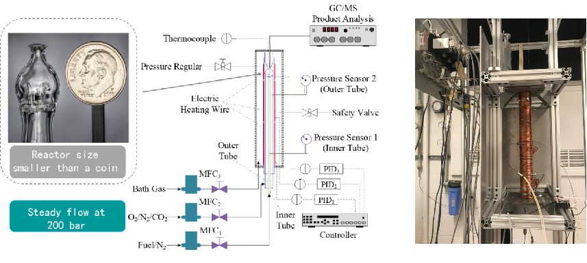
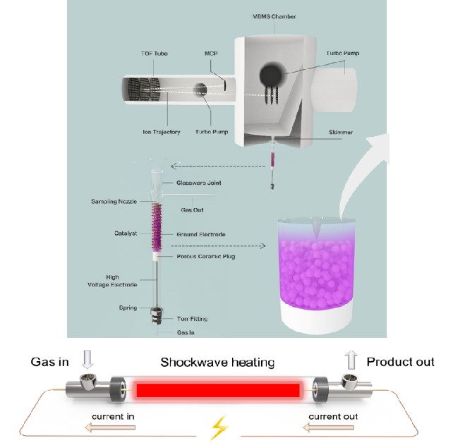
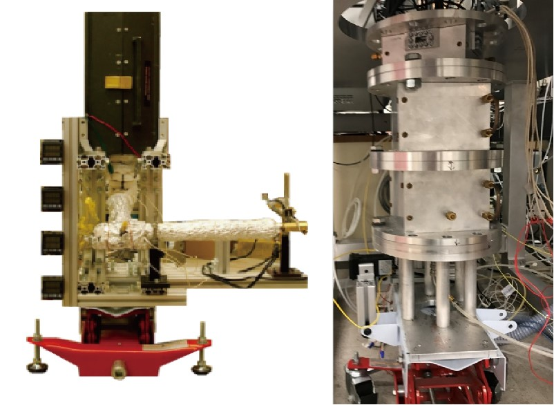
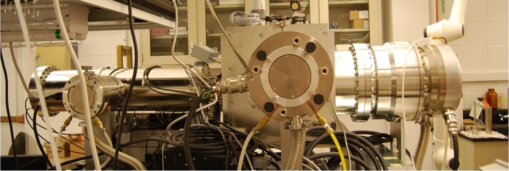
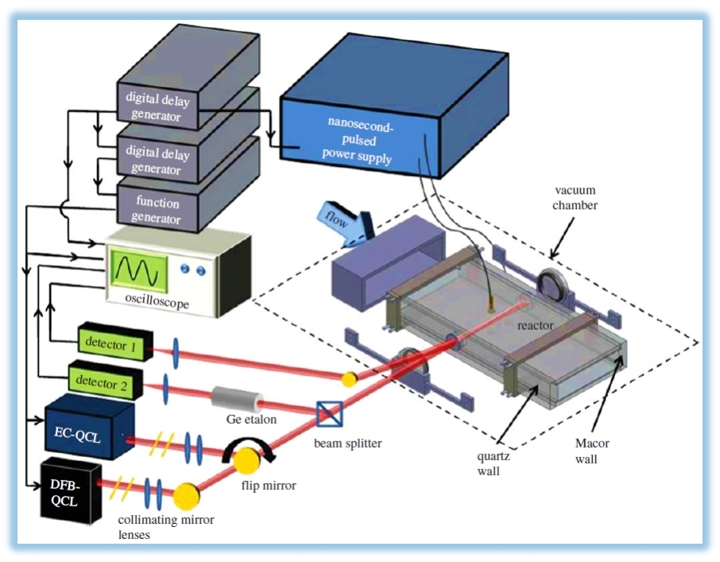
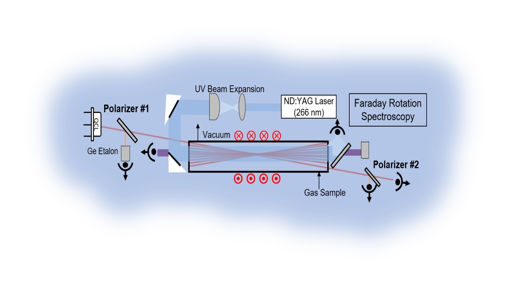
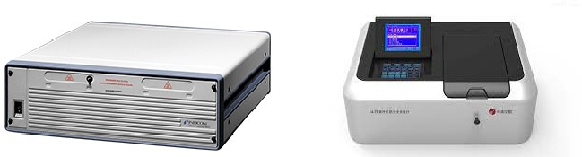
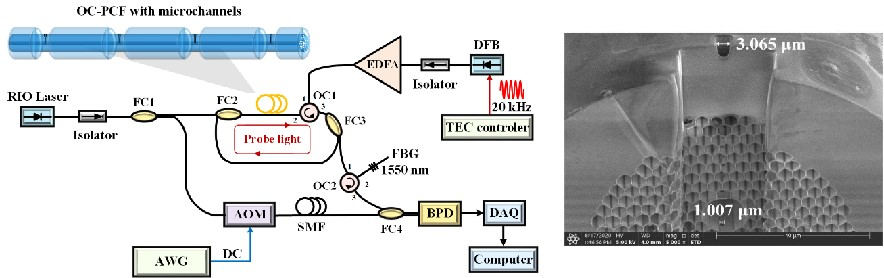

Supercritical Pressure Jet-stirred Reactor
超临界压力射流搅拌反应器，用于高压与超临界条件下的燃烧反应动力学实验。

Reactors
面向超临界燃烧、等离子体辅助反应与流动反应动力学研究的实验平台。
超临界压力射流搅拌反应器，用于高压与超临界条件下的燃烧反应动力学实验。

等离子体辅助反应器与脉冲加热反应器，用于非平衡激发与快速加热过程研究。

流动反应器与射流搅拌反应器，用于常压至高压条件下的氧化与反应机理研究。

Diagnostics
覆盖质谱、激光吸收、法拉第旋转光谱、色谱与光纤光热干涉等诊断手段。
电子轰击分子束质谱仪，用于反应中间物种的原位检测与定量分析。

激光吸收光谱系统，用于关键组分浓度与温度的高精度光谱诊断。

法拉第旋转光谱系统，用于自由基等顺磁物种的高灵敏度探测。

气相色谱与紫外光谱仪，用于产物组成分析与紫外吸收光谱测量。

全光纤光热干涉探针，用于原位光热干涉传感与局部场诊断。
